Two independent fixed ECRO OWN fits, 24,000 steps each. Same 735,664 trainable parameters. Fresh physical datasets: near-mirror GGX and real volume SSS. Held-out geometry/light evaluations, not training images.
ECRO predicts the higher-order boundary table. Physical material response and the first two optical-domain interactions remain explicit. SSS internal collisions are grouped into one entry-to-first-exit interaction. This is not a claim that the neural model learns the entire local SSS response.
128 train geometries, 16 validation, 8 test; 24,000 steps; training 9.6 minutes (actual possibly contended wall).
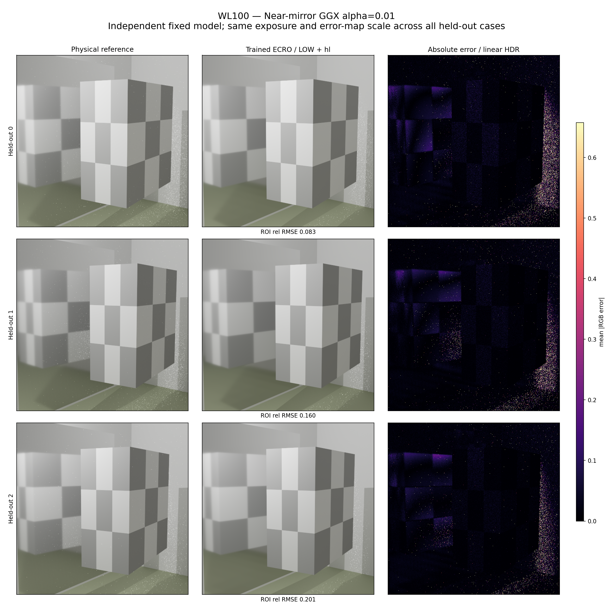
Held-out boundary-field target noise: relative L1 0.081, relative RMS 0.926. Near-mirror point-light targets have rare-path heavy tails; those field errors do not isolate neural representation failure. Image reference-half noise is reported separately in each figure.
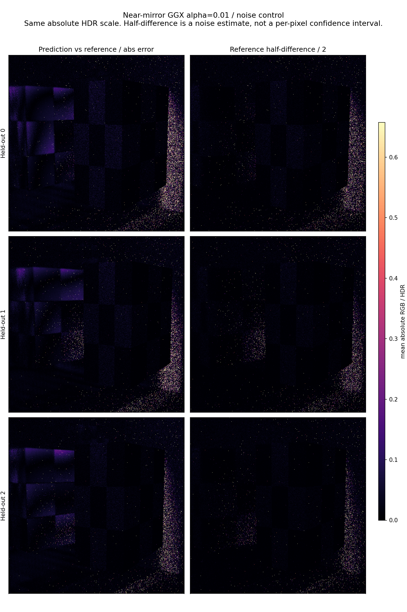
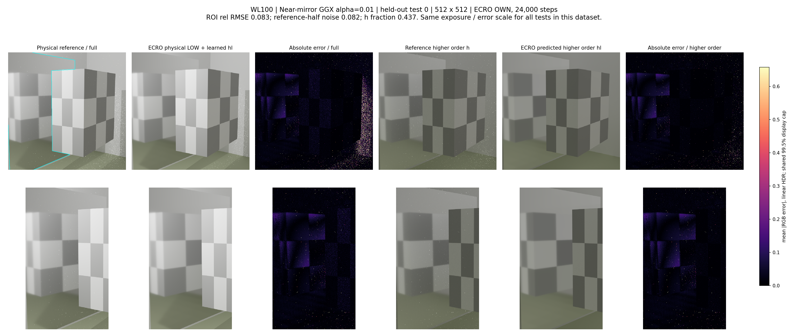
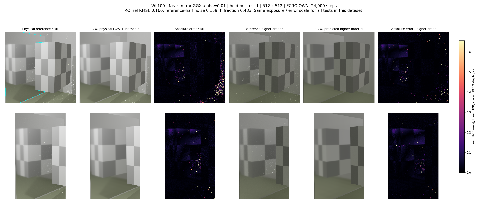
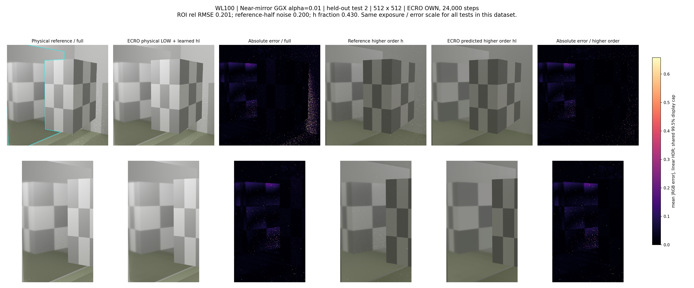
128 train geometries, 16 validation, 8 test; 24,000 steps; training 8.9 minutes (actual possibly contended wall).
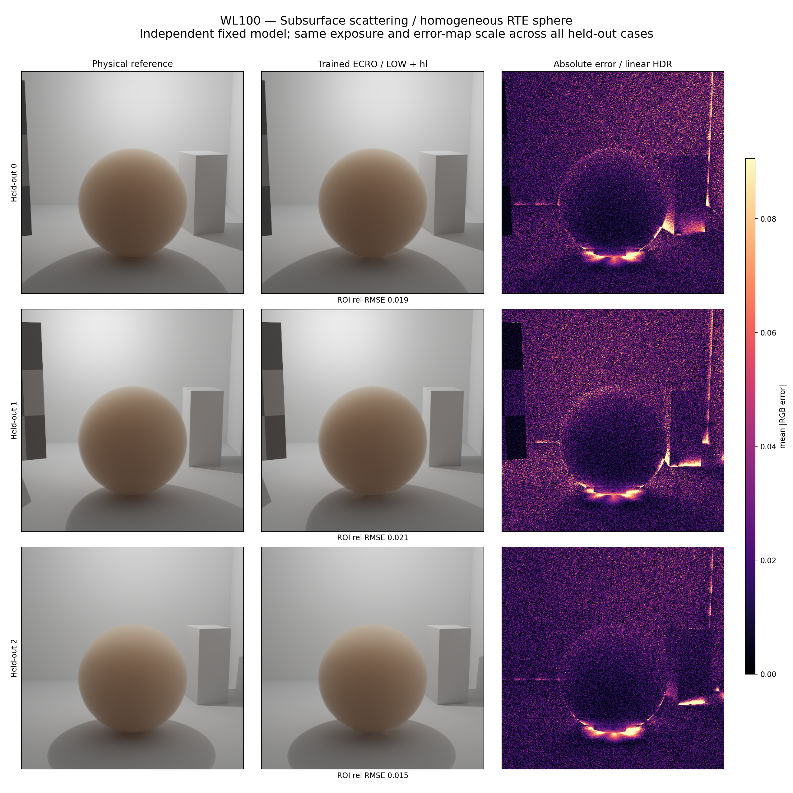
Held-out boundary-field target noise: relative L1 0.046, relative RMS 0.053. Near-mirror point-light targets have rare-path heavy tails; those field errors do not isolate neural representation failure. Image reference-half noise is reported separately in each figure.
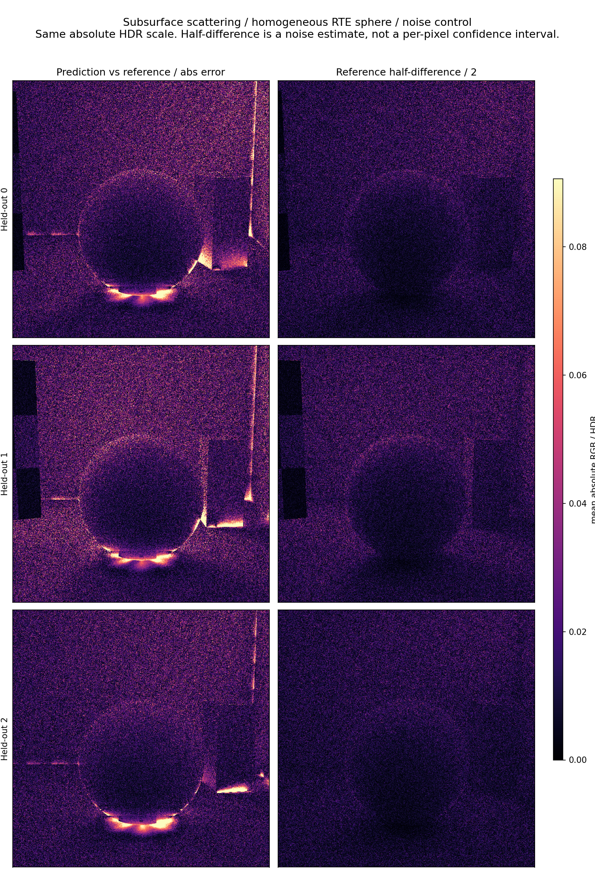
Post-hoc material-physics visual control, not training/model evidence.
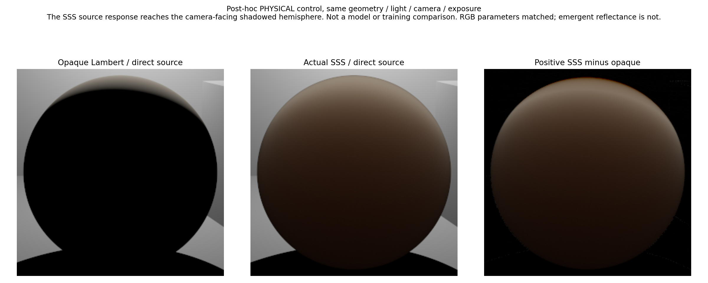
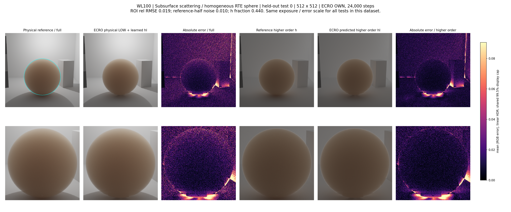
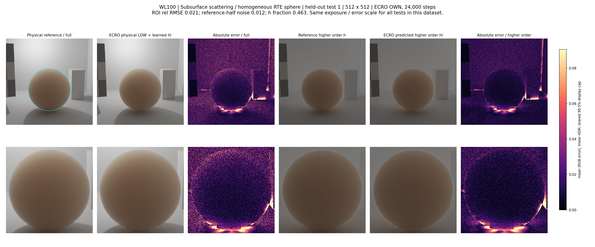
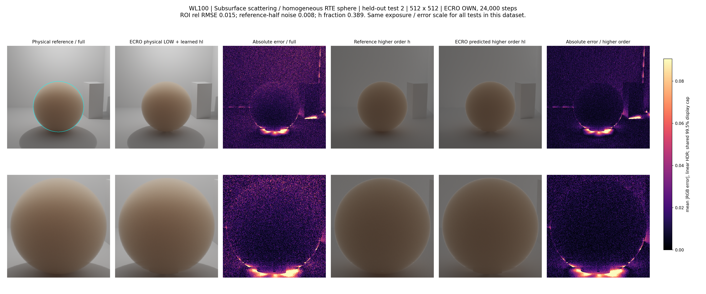
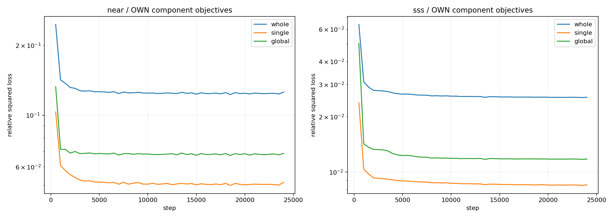